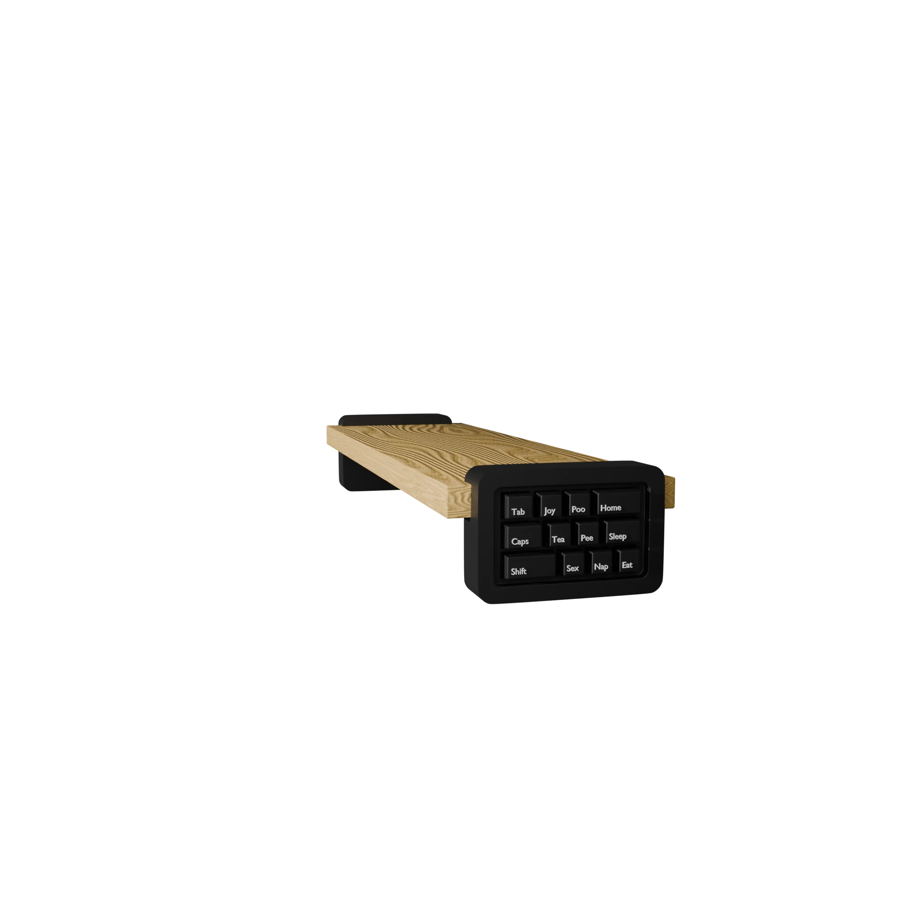

3D-ПЕЧАТЬ / ПРЕДМЕТНЫЙ ДИЗАЙН
Keycap подставка
Подставка под монитор для хранения аудиокарты и организации рабочего места. В конструкции соединены деревянная плоскость и функциональный модуль из keycap-элементов.

Задача
Нужно было освободить рабочую поверхность и поднять монитор на удобную высоту. Нижний объем оставляет место для аудиокарты, а боковые элементы помогают удерживать аксессуары и поддерживать порядок.
Проект рассчитан на реальное использование: размеры, устойчивость и доступ к технике закладываются одновременно с внешним видом.
Форма и материал
Деревянная плоскость создает теплый визуальный акцент на фоне темного оборудования. Черный модуль с клавишами добавляет характер и работает как функциональная деталь, а не только как декор.
Результат
Получилась компактная подставка, которая систематизирует рабочее место и одновременно остается самостоятельным предметом интерьера. Следующий этап — уточнение деталей и подготовка модели к печати.
Есть похожая задача?